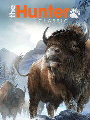

theHunter Classic
theHunter Classic
Details
|  | |
| Playtime | 5h 37m 0s |
| Last Activity | 8/1/2023 12:14:19 |
| Added | 8/19/2023 14:50:24 |
| Modified | 8/19/2023 15:21:12 |
| Completion Status | Played |
| Library | Steam |
| Source | Steam |
| Platform | PC (Windows) |
| Release Date | 6/3/2014 |
| Community Score | 52 |
| Critic Score | 67 |
| User Score | |
| Genre | Adventure Shooter Simulator Sport |
| Developer | |
| Publisher | Avalanche Studios Expansive Worlds |
| Feature | Co-Operative Multiplayer Single Player |
| Links | Official Steam Twitch |
| Tag | |
Description

The most realistic online hunting game ever created is available now, for free! Experience the thrill of the hunt in vast, open-world environments ranging from the desolate Australian outback and overgrown swamps of Louisiana to the dramatic landscape of the Austrian Alps. As a hunter, you will use everything from crossbows to handguns and state of the art bolt action rifles to track, spot and harvest your prey. Realistic animal behaviors and persistent online features provide a living, open world where you can explore at your own pace or compete with other players for bragging rights.
Key Features
- theHunter Classic was first released in 2009, and is still continuously updated with new weapons, species, environments, equipment and features. There’s a treasure trove of content for hunters to discover here, and more is still coming!
- Explore 12 vast and endlessly varied environments with detailed graphics, complete with a full day cycle and immersive weather effects - from the sub-arctic Alaska to the swamps of Louisiana.
- Form a hunting team and experience co-op multiplayer with up to 7 friends (or complete strangers).
- Hunt 45 lifelike species, all recreated in painstaking detail from looks to behaviours: Bison, Moose, Red Deer, Rocky Mountain Elk, Roosevelt Elk, Alpine Ibex, Bighorn Sheep, Blacktail Deer, Feral Hog, Mule Deer, Reindeer, Roe Deer, Sitka Deer, Whitetail Deer, Wild Boar, Feral Goat, Dall Sheep, American Black Duck, Gadwall, Mallard, Pintail, Rock Ptarmigan, White-tailed Ptarmigan, Willow Ptarmigan, Cottontail Rabbit, European Rabbit, Snowshoe Hare, Pheasant, Turkey, Canada Goose, Black Bear, Brown Bear, Grizzly Bear, Polar Bear, Red Kangaroo, Grey Wolf, Coyote, Red Fox, Arctic Fox, Bobcat, Water Buffalo, Rusa Deer, Sambar Deer, Banteng and Magpie Goose.
Occasionally, on Halloween night, some players swear they saw Werewolves too! - Extensive online features. Increase your skills, increase your stats and get creative with Trophy Shots. Take part in competitions and climb the leaderboards or go on challenging missions to earn achievements.
- Join the biggest and friendliest online hunting community. We are all about helping and sharing our achievements. Show off that incredible set of antlers, proudly mounted in your private Trophy Lodge, or check out other accomplished hunters’ hauls for inspiration. Having trouble tracking and harvesting that big one? Ask the community, many of whom are real-life hunters, and get a helping hand.
Progressing and Acquiring Items in the Game
In theHunter Classic, a generous amount of content is available for free. Right at the outset two weapons (.243 Bolt-Action Rifle & 12 GA Single Shot shotgun) and a great equipment loadout is available at no cost. Additional items such as weapons, equipment, clothing and ammunition can be acquired with gm$, in-game currency that can be earned through playing the game, or em$, in-game currency that can be purchased for real-life money or earned through winning in-game competitions.By hunting certain species and using certain items in the game, you are able to hone your skills and improve as a hunter. As these skills increase, more abilities unlock. With time and practice, you will be able to tell weight and gender from a simple animal track, and develop steadier aim for a range of weapons.
Achievements can be earned through diverse in-game activities. Each achievement adds to your HunterScore, which can be used to track and compare your progress with other hunters. Increasing your HunterScore also unlocks upgrade items such as pouches and holsters for your rifles.